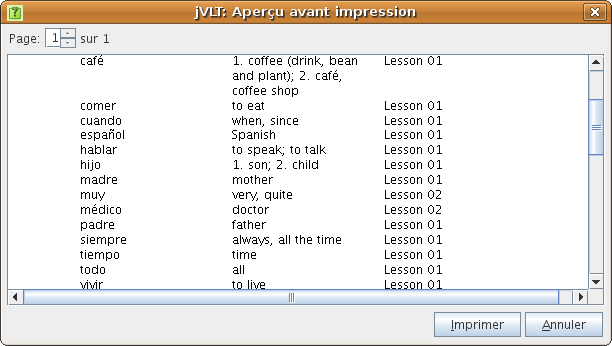
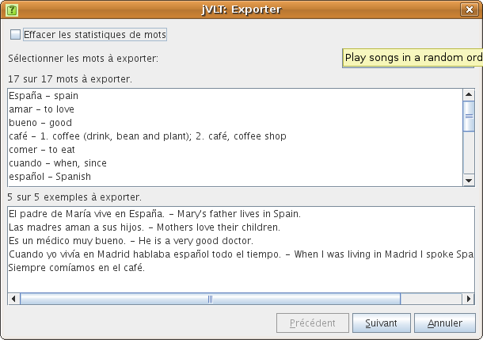

jVLT - outil d’apprentissage du vocabulaire
Divers
Impression
jVLT vous permet d’imprimer les mots de votre dictionnaire. Vous pouvez soit imprimer directement en utilisant “Imprimer…” dans le menu “Fichier”, soit passer par l’aperçu en choisissant “Aperçu avant impression…” dans le même menu. Si vous ne voulez pas imprimer tous les mots, vous pouvez faire une sélection grâce aux filtres de la liste de mots. Quelles colonnes seront imprimées dépend des colonnes selectionnées pour la liste de mots, de même que la largeur des colonnes dépend de la largeur des colonnes de la liste de mots. Vous pouvez choisir la police utilisée pour l’impression dans les Préférences.
Importer des dictionnaires
Vous pouvez importer des dictionnaires aux formats de fichier jVLT ou CSV (comma separated values) en choisissant “Importer...” dans le menu “Fichier”. Les fichiers CSV peuvent être créés par des tableurs comme OpenOffice.org Calc.Dans la fenêtre d’importation, sélectionnez d’abord le type de fichier à importer. Ensuite choisissez le fichier en cliquant sur le bouton “Ouvrir…”. Si vous choisissez “fichier CSV” comme type de fichier, de nouveaux paramètres décrits ci-dessous apparaissent.
- Délimiteur de texte : Le caractère séparant les différents enregistrements (à la fin de chaque ligne) dans le fichier CSV, le guillemet (") par défaut.
- Délimiteur de champ : Le caractère séparant les champs d’un enregistrement dans le fichier CSV, la virgule (,) par défaut.
- Jeu de caractères : Le jeu de caractères (encodage) utilisé par le fichier CSV, UTF-8 par défaut.
- Langue : Si la langue de votre lexique est supportée par jVLT, vous pouvez la fixer ici. Certaines langues ont des attributs supplémentaires qui peuvent être choisis dans le tableau Attributs.
- Ignorer la première ligne : Si votre fichier CSV a une rangée d’en-têtes de colonne, veuillez cocher cette case.
- Nombre de sens : Ce paramètre détermine combien de colonnes sont utilisées pour les significations. Pour chaque signification il y a deux colonnes, une pour la traduction et une pour la définition. Chaque mot doit au moins avoir une signification qui doit contenir soit une traduction, soit une définition (ou bien les deux).
- Nombre de catégories : Le nombre de colonnes pour les catégories. Une catégorie peut être un texte arbitraire.
- Nombre de fichiers multimédia : Le nombre de colonnes pour les fichiers multimédia. Un fichier multimédia peut être défini soit par un chemin absolu, soit par un chemin relatif. Le chemin relatif détermine la location d’un fichier multimédia relatif au fichier vocabulaire.
-
Nombre d’exemples : Ce paramètre détermine combien de colonnes
sont utilisées pour les exemples. Chaque exemple a trois colonnes. La
première contient le texte d’exemple et la troisième la traduction
(facultative). La seconde contient le sens lié au
format “mot lié;index du sens”, “mot lié” ou “index du sens” -
elle peut aussi être vide. Par défaut, the mot original et l’index "1"
sont utilisés.
Considérez l’exemple de tableur suivant :
Original Prononciation 1e traduc. 1e déf. 2e traduc. 2e déf. Texte d’exemple
Sens lié
Traduc. de l’exemple
warten
wait
maintain
Das Flugzeug wird gerade gewartet. gewartet;2
gehen
go
Wir gehen ins Theater.
Le mot “warten” est conjugué dans la phrase d’exemple. Par conséquent, la forme conjuguée “gewartet” doit être spécifiée dans la seconde colone d’exemple. Comme l’exemple utilise le second sens du mot, le nombre “2” se trouve après le point-virgule dans la seconde colonne. Le second exemple est plus facile : pour le mot “gehen” un seul sens a été spécifié, et le mot n’est pas conjugué dans la phrase d’exemple, donc la seconde colonne d’exemple peut rester vide. - Attributs :Si une langue a été fixée, il se peut qu’il y ait des attributs personnalisés. Les attributs peuvent être ajoutés en cliquant dans la cellule dans la première colonne et le dernier rang du tableau, puis en sélectionnant un attribut dans la liste déroulante. Vous pouvez supprimer un attribut en sélectionnant un article vide dans la liste déroulante. La plupart des attributs n’ont qu’une seule colonne. Si un attribut consiste en une liste de valeurs, le nombre de colonnes peut être ajusté.

Après avoir cliqué sur le bouton “Suivant”, les mots et exemples qui seront importés s’affichent. Il y a aussi deux listes affichant les mots et exemples qui ne seront pas importés parce qu’ils se trouvent déjà dans le dictionnaire. Vous pouvez choisir de supprimer les statistiques (derniers mots demandés, nombre de fautes, etc) des données importées en cochant la case en haut de la fenêtre de dialogue. En cliquant sur “Teminer”, l’importation se déroule.

Exporter
Vous pouvez exporter le dictionnaire actif ou bien en exporter qu’une partie dans un fichier au format jVLT, (comma separated values) ou HTML par l’intermédiaire d’une fenêtre de dialogue qui s’ouvre après avoir choisi “Exporter…” dans le menu “Fichier”.Dans la boîte de dialogue d’export, choisissez d’abord les mots à exporter en cliquant sur le bouton “Sélectionner les mots…”. La fenêtre qui s’ouvre ensuite est la même que celle décrite dans la section Quiz. De même que lors de l’importation de mots, c’est possible de remettre les statistiques à zéro.

Après avoir cliqué sur le bouton “Suivant”, un nouveau panneau s’affiche, il vous permet de choisir le type de fichier et le fichier vers lequel exporter. Notez que si vous choisissez le fichier de type CSV, il est probable que toutes les informations ne seront pas enregistrées. Cliquez sur “Terminer” pour finir l’export.